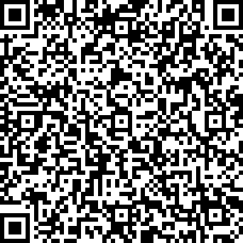

03/08/2017
Le numérique au service de la nature
Article du journal "La Région Nord Vaudois", écrit par Simon Gabioud.
Description de la zone
Observation des espaces naturels au travers de la vision caméra de l'appareil (smartphone, tablette) avec superposition d'éléments virtuels.
Ces éléments sont des points d'intérêts biodiversité qui sont positionnés dans la vue selon la réalité du terrain.
Leur icônographie, dynamique et interactivité offrent à l'utilisateur des informations et connaissances sur la biodiversité en présence, aux alentours du lieu d’observation.
Vous pouvez télécharger la version bêta de l'application (uniquement disponible pour les systèmes Android), telle qu'elle a été présentée lors de la Fête de la Nature au centre Champ-Pittet d'Yverdon-les-Bains, le 21 mai 2017. Pour cela, il vous suffit de suivre, sur votre smartphone ou tablette Android, les 3 étapes suivantes :
Par défaut, Android n'autorise l'installation d'applications que si elles proviennent de Google Play.
Pour modifier ce comportement, dans l'application Paramètres de votre appareil, accédez au paramètre Sources inconnues.
Trouvez-le grâce au champ de recherche, ou dans la section Sécurité de vos paramètres.
Si le paramètre est désactivé, activez-le. S'il est déjà activé, tout va bien !

Dès que vous aurez installé l'application BioSentiers, il est recommandé que vous décochiez ce paramètre.
Pour télécharger l'installeur sur votre téléphone ou votre tablette, nous vous conseillons d'accéder au site directement depuis votre appareil, puis de cliquer sur le bouton ci-dessous.
Si vous téléchargez l'installeur depuis un ordinateur, vous devrez le transférer manuellement vers votre appareil.
Télécharger BioSentiers
Version Bêta - ~104 Mo
Une fois le téléchargement terminé, ouvrez le fichier biosentiers-debug.apk pour lancer
l'installation.
Vous pouvez sans souci supprimer le fichier téléchargé dès que l'application est installée.
Lorsque vous démarrez l'application, elle vous demande de scanner un QR Code afin d'initialiser une sortie.
BioSentiers dispose de son propre lecteur de QR Code.
BioSentiers fonctionne avec un système de sorties, qui prennent place sur une ou plusieurs zones du sentier d'Yverdon-les-Bains.
Scannez le QR Code suivant pour créer une sortie comprenant toutes les zones du sentier.

Le concept BioSentiers est développé par une équipe interdisciplinaire de la HEIG-VD regroupant des compétences des instituts MEI et INSIT, alliant les technologies des médias à celles de l’information géographique.